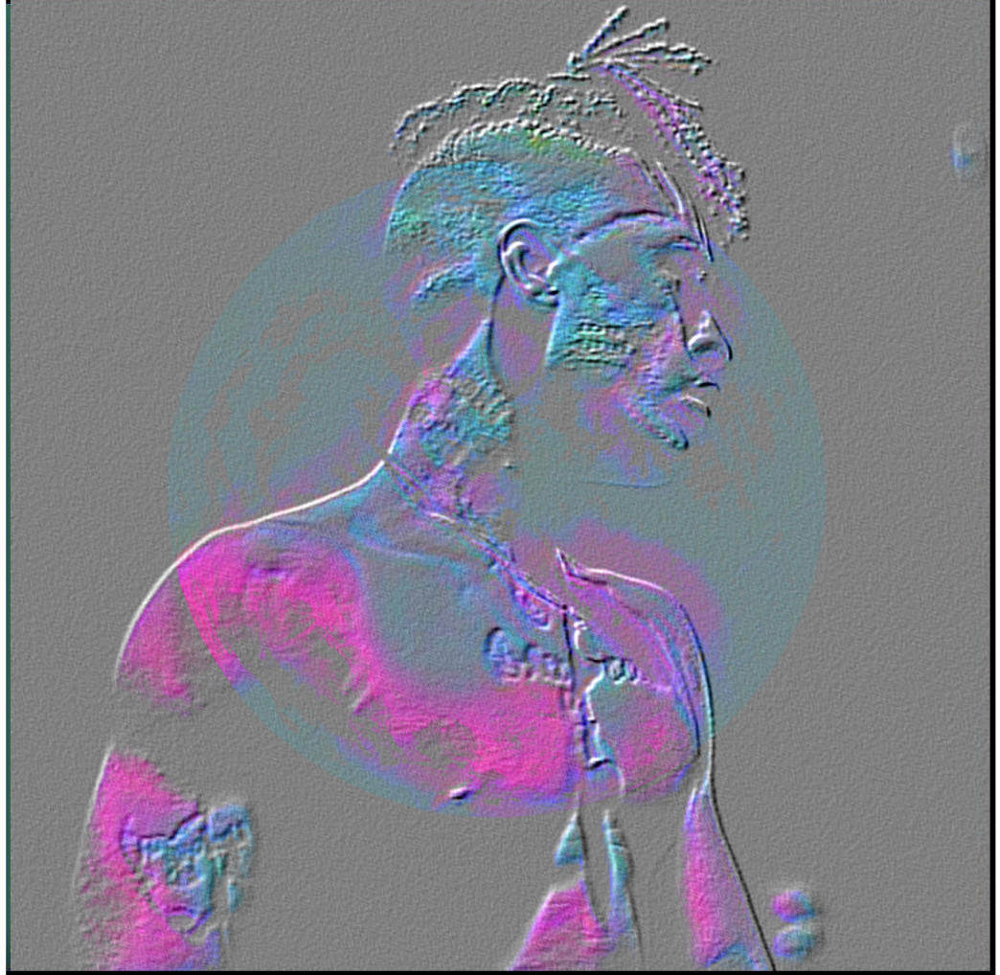
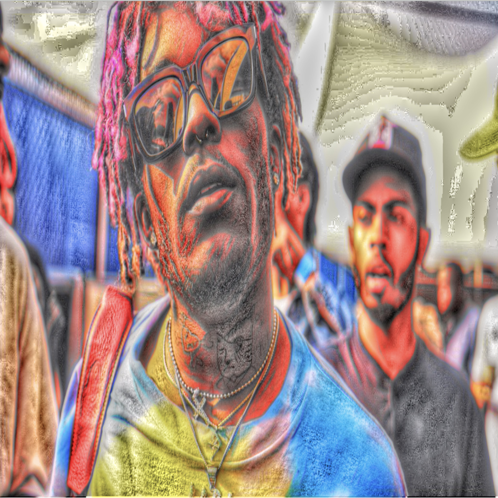
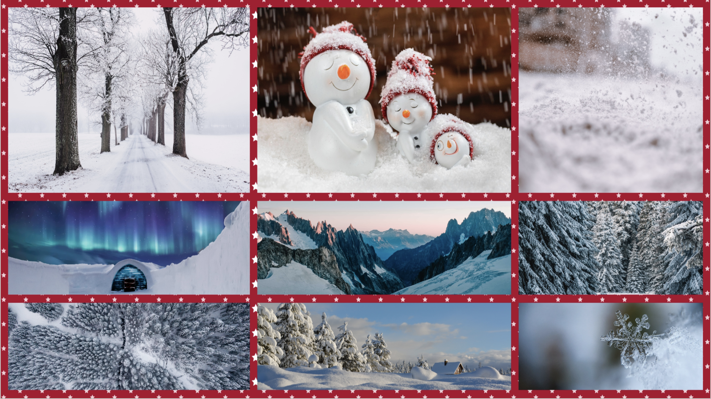
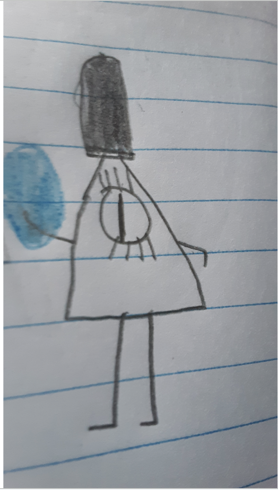
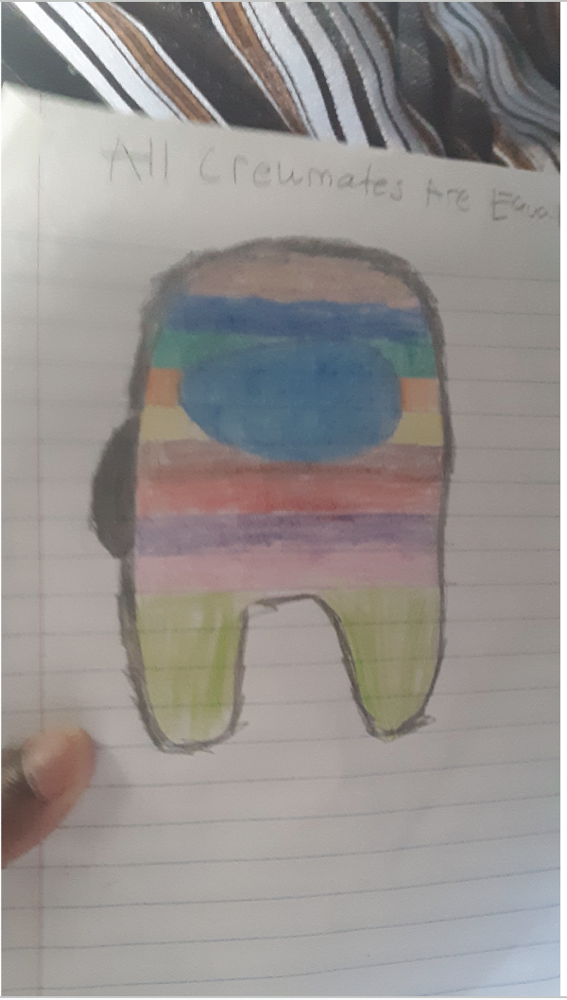
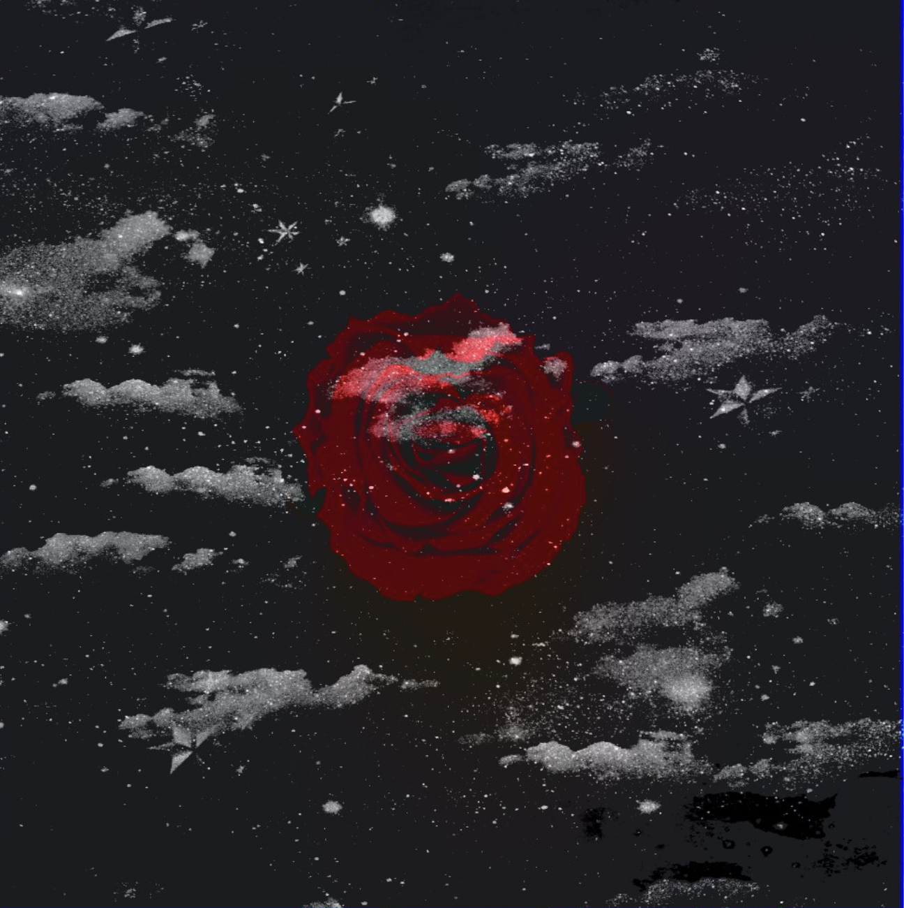

Visual Design Page
Visual Design
About me
Digital Design

This is an image of xxxtentacion someone who was a famous rapper before
but ended up passing away sadly in 2018, i made this artwork during the pandemic
in like 2020 or 2019 during artclass i put an image of this rapper and blended it in
with the background to create this.

This is an artist named lil uzi vert i took an image of him walking in public from google
and stylized it to make this artwork look more like it was physically drawn rather then
a actual image.

This ia colleauge of different images from winter enviroments such as snowman,trees and snowflakes.
i used free stock photos from a specific website in order to create this and i created sort of a
decorative border
which is like christmas decorations in order to seperate the images.

This is an image i drew of a person from a very popular tv show at least that was popular
called gravity falls, the name of this guy was bill chiper was one of the main antagonists
of the series who seeked to invade earth with demons like him and make himself super powerful.

In this image i drew a crewmate from among us with a variety of different colors including
brown blue green orange yellow red pink and green.

In this image i took an image of rose i think it might have been some sort of drawing or something
and then i made that image transparent with a starry background and i think i might have also increased
the saturation to make the rose stand out more.